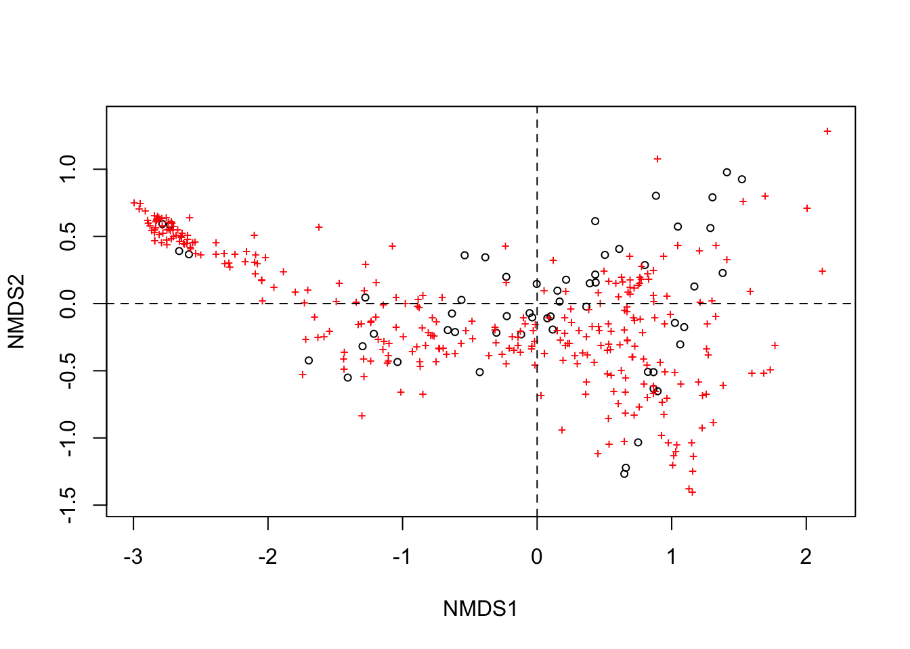
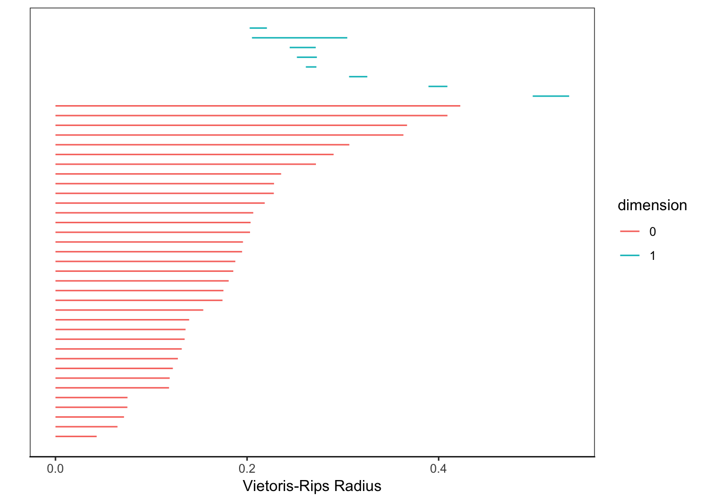
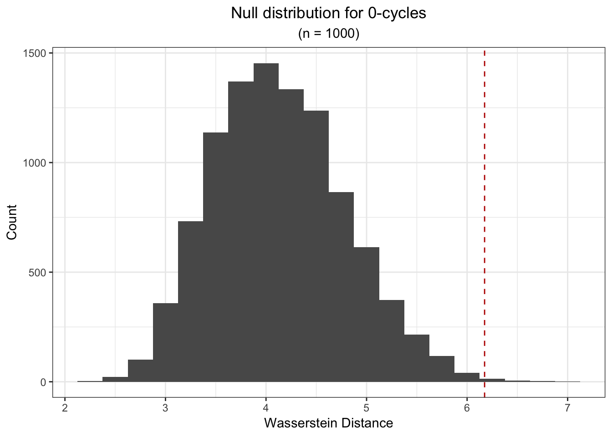
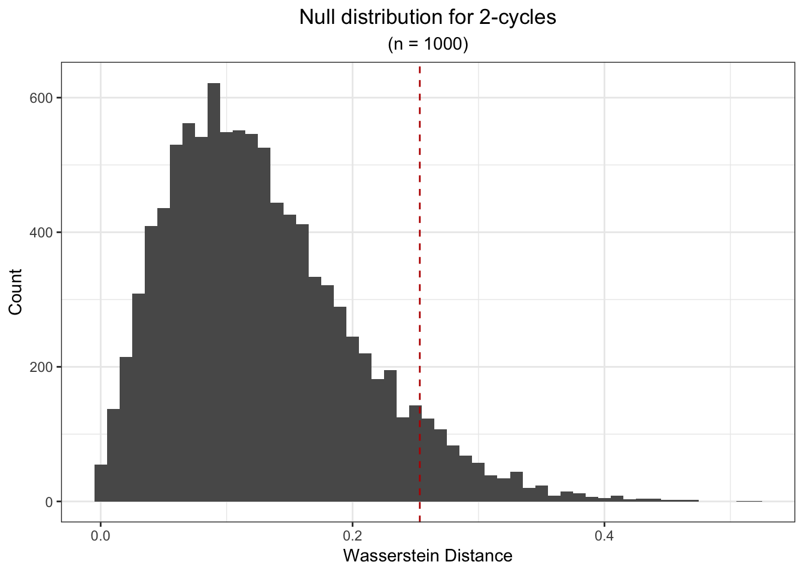

library(ecodist, warn.conflicts = FALSE)
library(ggplot2, warn.conflicts = FALSE)
library(MASS, warn.conflicts = FALSE)
library(TDA, warn.conflicts = FALSE)
library(TDAstats, warn.conflicts = FALSE)
library(phyloseq, warn.conflicts = FALSE)
library(phylosmith, warn.conflicts = FALSE)
library(RColorBrewer, warn.conflicts = FALSE)
library(tidyverse, warn.conflicts = FALSE)
library(TDA, warn.conflicts = FALSE)
library("TDAstats", warn.conflicts = FALSE)
library(vegan, warn.conflicts = FALSE)We’ll begin our exploration of topological data analysis with the application of persistent homology. We’ll start on the soil column data set, as there has been a clear signal demonstrated in NMDS plots indicating separation between soil-treated and manure-treated columns. Persistent homology should be able to detect some difference in the topological structure of two different treatments. After this verification, we will move on to applying persistent homology to our data set.
We’ll begin by reading in the soil column data sets.
soil_column.args <- readRDS("./data/raw/arg-phyloseq.RDS")
soil_column.args## phyloseq-class experiment-level object
## otu_table() OTU Table: [ 355 taxa and 56 samples ]
## sample_data() Sample Data: [ 56 samples by 7 sample variables ]
## tax_table() Taxonomy Table: [ 355 taxa by 2 taxonomic ranks ]soil_column.args.cooccur <- FastCoOccur(soil_column.args, "Treatment")phyloseq_ggplot_NMDS <- function(phyloseq_obj, treatment){
require(ggplot2); require(RColorBrewer); require(vegan); require(MASS); require(phylosmith)
getPalette = colorRampPalette(brewer.pal(8, "Dark2")); colorCount = 1 + length(unlist(unique(sample_data(phyloseq_obj)[[treatment]]))); colors = getPalette(colorCount); theme_set(theme_bw())
MDS <- metaMDS(t(otu_table(find_generalists(phyloseq_obj))), autotransform = FALSE, distance = "bray", k=3, trymax=50)
plot(MDS, display = c("sites", "species"), choices = c(1,2), type = "p")
abline(h=0,lty=2)
abline(v=0,lty=2)
stressplot(MDS)
Treatment <- sample_data(phyloseq_obj)[[treatment]]
MDS$points[,'MDS1']
MDS1 <- data.frame(scores(MDS))$NMDS1
MDS2 <- data.frame(scores(MDS))$NMDS2
NMDS <- data.frame(MDS1,MDS2,Treatment)
NMDS.narm <- subset(NMDS, !is.na(Treatment))
veganCovEllipse<-function (cov, center = c(0, 0), scale = 1, npoints = 100){
theta <- (0:npoints) * 2 * pi/npoints
Circle <- cbind(cos(theta), sin(theta))
t(center + scale * t(Circle %*% chol(cov)))}
df_ell <- data.frame()
for(g in unique(NMDS.narm[[treatment]])){
df_ell <- rbind(df_ell, cbind(as.data.frame(with(NMDS.narm[NMDS.narm[,treatment]==g,], veganCovEllipse(cov.wt(cbind(MDS1,MDS2),wt=rep(1/length(MDS1),length(MDS1)))$cov,center=c(mean(MDS1),mean(MDS2))))),group=g))}
p <- ggplot(data = NMDS.narm, aes(MDS1, MDS2)) +
geom_point(aes(color = treatment), size=1.5, alpha=0.75) +
geom_path(data=df_ell, aes(x=MDS1, y=MDS2, colour=group), size=2, linetype=5) +
scale_color_manual(values=colors) +
theme_classic() +
theme(aspect.ratio=1,
axis.line.x = element_line(colour = 'black', size = 1, linetype = 'solid'),
axis.line.y = element_line(colour = 'black', size = 1, linetype = 'solid'),
axis.text.x = element_text(size = 10, face = "bold"),
axis.text.y = element_text(size = 10, face = "bold"),
axis.title.x = element_text(size = 12, face = "bold"),
axis.title.y = element_text(size = 12, face = "bold"),
legend.title = element_blank(),
legend.text = element_text(size = 11, face = "bold"),
legend.background = element_rect(fill = (alpha = 0))
)
return(p)
}
phyloseq_ggplot_NMDS(soil_column.args, "Treatment")## Run 0 stress 0.05503205
## Run 1 stress 0.05503871
## ... Procrustes: rmse 0.0006140306 max resid 0.003259773
## ... Similar to previous best
## Run 2 stress 0.05502878
## ... New best solution
## ... Procrustes: rmse 0.0002977222 max resid 0.0007551316
## ... Similar to previous best
## Run 3 stress 0.05517698
## ... Procrustes: rmse 0.01238438 max resid 0.03884637
## Run 4 stress 0.05651306
## Run 5 stress 0.05657523
## Run 6 stress 0.05648213
## Run 7 stress 0.05501916
## ... New best solution
## ... Procrustes: rmse 0.003172532 max resid 0.008788481
## ... Similar to previous best
## Run 8 stress 0.05628847
## Run 9 stress 0.05658752
## Run 10 stress 0.05627793
## Run 11 stress 0.05504637
## ... Procrustes: rmse 0.004175026 max resid 0.0154417
## Run 12 stress 0.05505466
## ... Procrustes: rmse 0.003034609 max resid 0.01973011
## Run 13 stress 0.05508956
## ... Procrustes: rmse 0.006527593 max resid 0.0216531
## Run 14 stress 0.05507177
## ... Procrustes: rmse 0.005636935 max resid 0.01855305
## Run 15 stress 0.05503605
## ... Procrustes: rmse 0.003807336 max resid 0.01021034
## Run 16 stress 0.05510828
## ... Procrustes: rmse 0.007960566 max resid 0.02613718
## Run 17 stress 0.05506057
## ... Procrustes: rmse 0.005248288 max resid 0.01819778
## Run 18 stress 0.05501986
## ... Procrustes: rmse 0.0007172414 max resid 0.004118383
## ... Similar to previous best
## Run 19 stress 0.05507728
## ... Procrustes: rmse 0.005099937 max resid 0.01942701
## Run 20 stress 0.05522087
## ... Procrustes: rmse 0.01270346 max resid 0.03957645
## *** Solution reached
Performing NMDS, reducing data. Preparing data for persistent homology.
soil_column.nmds <- metaMDS(t(otu_table(find_generalists(soil_column.args))), autotransform = FALSE,
distance = "bray", k = 2, trymax = 50)## Run 0 stress 0.0724996
## Run 1 stress 0.0724995
## ... New best solution
## ... Procrustes: rmse 3.607541e-05 max resid 0.0001526312
## ... Similar to previous best
## Run 2 stress 0.07250404
## ... Procrustes: rmse 0.0009593439 max resid 0.005078892
## ... Similar to previous best
## Run 3 stress 0.1075538
## Run 4 stress 0.07249969
## ... Procrustes: rmse 0.0001720492 max resid 0.0008290157
## ... Similar to previous best
## Run 5 stress 0.1245003
## Run 6 stress 0.1074876
## Run 7 stress 0.07249957
## ... Procrustes: rmse 3.229384e-05 max resid 0.0001406688
## ... Similar to previous best
## Run 8 stress 0.07542739
## Run 9 stress 0.1080535
## Run 10 stress 0.07250031
## ... Procrustes: rmse 0.0001689604 max resid 0.0009966428
## ... Similar to previous best
## Run 11 stress 0.07249986
## ... Procrustes: rmse 0.0001055691 max resid 0.0004269411
## ... Similar to previous best
## Run 12 stress 0.07542925
## Run 13 stress 0.07249964
## ... Procrustes: rmse 0.0002237996 max resid 0.001398844
## ... Similar to previous best
## Run 14 stress 0.07249994
## ... Procrustes: rmse 0.0001238032 max resid 0.0006341866
## ... Similar to previous best
## Run 15 stress 0.0725002
## ... Procrustes: rmse 0.0002979045 max resid 0.001745863
## ... Similar to previous best
## Run 16 stress 0.07250289
## ... Procrustes: rmse 0.0009198518 max resid 0.005124249
## ... Similar to previous best
## Run 17 stress 0.07250344
## ... Procrustes: rmse 0.0009535013 max resid 0.005125878
## ... Similar to previous best
## Run 18 stress 0.07250236
## ... Procrustes: rmse 0.0009085008 max resid 0.005152772
## ... Similar to previous best
## Run 19 stress 0.1076225
## Run 20 stress 0.07249958
## ... Procrustes: rmse 2.695381e-05 max resid 0.0001471191
## ... Similar to previous best
## *** Solution reachedPCA_1 <- data.frame(scores(soil_column.nmds))$NMDS1
PCA_2 <- data.frame(scores(soil_column.nmds))$NMDS2
treatments <- sample_data(soil_column.args)[["Treatment"]]
soil_column.nmds.transform <- data.frame(PCA_1, PCA_2, treatments)
soil_column.nmds.transform.narm <- subset(soil_column.nmds.transform, !is.na(treatments))Separating data by category.
soil_column.nmds.manure <- soil_column.nmds.transform.narm %>%
filter(treatments == "Manure") %>%
select(PCA_1, PCA_2) %>%
as.matrix()
soil_column.nmds.control <- soil_column.nmds.transform.narm %>%
filter(treatments == "Control") %>%
select(PCA_1, PCA_2) %>%
as.matrix()Persistent homology by treatment. First, the manure treatment:
manure.hom <- calculate_homology(soil_column.nmds.manure, dim = 3)
plot_persist(manure.hom)plot_barcode(manure.hom)
plot(manure.hom)Persistent homology for control data:
control.hom <- calculate_homology(soil_column.nmds.control, dim = 3)
plot_persist(control.hom)plot_barcode(control.hom)We’ll now normalize the barcode graphs so that we can make more direct comparison of homologies between treatment and contorl groups.
plot_barcode(control.hom) +
ggtitle("Persistent homology: control") +
xlim(c(0, 4))## Scale for 'x' is already present. Adding another scale for 'x', which
## will replace the existing scale.plot_barcode(manure.hom) +
ggtitle("Persistent homology: manure") +
xlim(c(0, 4))## Scale for 'x' is already present. Adding another scale for 'x', which
## will replace the existing scale.We now run a permutation test on the two datasets to confirm that the persistent homologies of the two datasets are distinct. For more information on significance testing on persistent homologies, see “Hypothesis testing for topological data analysis”
control_manure.perm_test <- permutation_test(soil_column.nmds.control,
soil_column.nmds.manure,
iterations = 1000)The p-value for 0-cycles:
print(control_manure.perm_test[[1]]$pvalue)## [1] 0.003So we see that the the p-value is below the significance threshhold, indicating that the structure of the 0-cycles in the two data sets are distinct. On the other hand, for the 1-cycles:
print(control_manure.perm_test[[2]]$pvalue)## [1] 0.07This is above the traditional signifiance threshold of 0.05 for signifiance testing. Without further coroborrating evidence, we can’t assume there is statistical difference between the two data sets.
We can also plot the null distribution for the n-cycles:
ggplot(data.frame(val = control_manure.perm_test[[1]]$permvals), aes(val)) + geom_histogram(binwidth = 0.25) +
labs(x = "Wasserstein Distance", y = "Count",
title = "Null distribution for 0-cycles",
subtitle = "(n = 1000)") +
theme(plot.title = element_text(hjust = 0.5),
plot.subtitle = element_text(hjust = 0.5)) +
geom_vline(xintercept = control_manure.perm_test[[1]]$wasserstein,
colour = "#BB0000", linetype = "dashed") 
ggplot(data.frame(val = control_manure.perm_test[[2]]$permvals), aes(val)) + geom_histogram(binwidth = 0.01) +
labs(x = "Wasserstein Distance", y = "Count", title = "Null distribution for 2-cycles",
subtitle = "(n = 1000)") +
theme(plot.title = element_text(hjust = 0.5), plot.subtitle = element_text(hjust = 0.5)) +
geom_vline(xintercept = control_manure.perm_test[[2]]$wasserstein, colour = "#BB0000", linetype = "dashed") 
I forgot what this is supposed to be :)
ggplot(data = soil_column.nmds.transform.narm, aes(x = PCA_1, y = PCA_2, color = treatments)) +
geom_point()
Paul Villanueva
Ph.D. Student, Bioinformatics and Computational Biology
Iowa State University. Ames, IA.